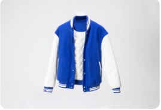
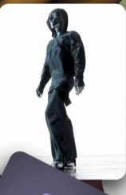
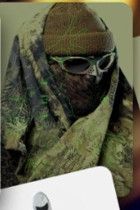
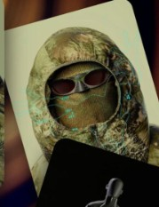
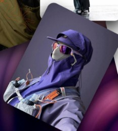
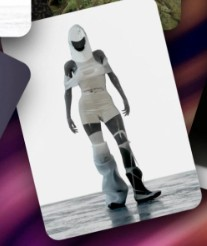
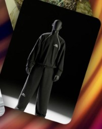
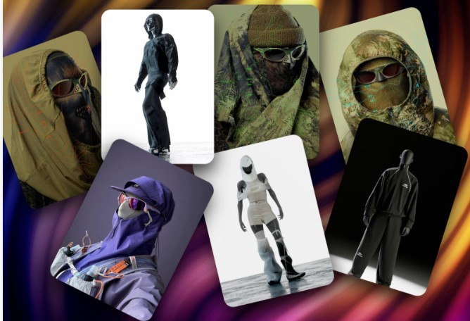

STYLEUP / OUTERWEARVarsity Blue Edition2D
JavaScript Avanzado · CSS
Dos formas de explorar productos StyleUp: una tarjeta con transformaciones 2D y una galería circular 3D con profundidad real.
Explora los dos lados de la chaqueta. El CSS utiliza
translate, rotate, scale y
skew; JavaScript aplica la transformación al pulsar un
botón.
Transformación actual: none

Seis looks a partir de la imagen de tu colección. Las tarjetas forman un carrusel en perspectiva, con giro sobre el eje Y y desplazamiento en Z.

URBAN NIGHT
CAMO TECH
GREEN MODE
PURPLE WAVE
WHITE MOTION
BLACK EDITION
Ángulo: 0° · Propiedades:
perspective, rotateY(),
translateZ(), preserve-3d
